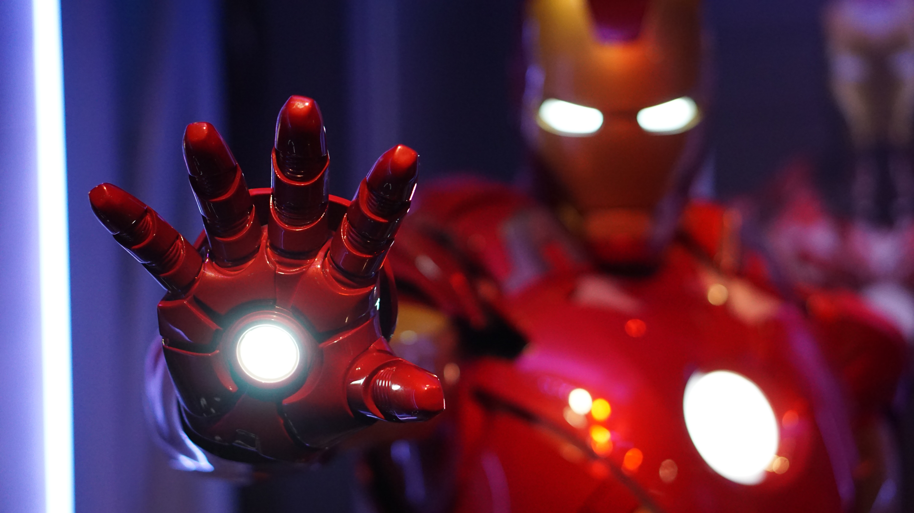

Excellent film to culminateMCU ride
Where to begin, where to begin! You know a movie is outstanding when the end credits alone are more epic than the majority of films released in the last 20 years! This film is the pure definition of an emotional roller coaster and throughout it's run time brings about fascination, humor, sadness, incredible excitement, and sheer finality. This is not your typical superhero movie and some viewers used to the entertaining, nonstop action style of the previous films may be disappointed, but I think that this movie brilliantly satisfies and subverts expectations.
The film's storytelling is some of the best ever seen in blockbuster filmaking, combining smart writing, intimate character moments, and exceptional world building to create one of the best blockbuster stories ever. The superheroes are all brilliantly acted and well written, with Robert Downey Jr, Scarlett Johannson, and Chris Evans in particular turning in some of the most human and enduring acting preformances I have ever seen. In addition, Josh Brolin once again proves utterly breathtaking as Thanos, and he somehow feels even more intimidating and horribly insane than he was in Infinity War. Further proving that Thanos is definitely among the very best movie villains of the last century.
The action is honestly some of the finest in the history of cinema. The world renowned final battle of this film is riveting, heartbreaking, awe inspiring, and exceptionally well choreographed. Never before have I been so thoroughly moved and elated while watching a battle scene in film. The film's soundtrack is also one of the best of it's kind and brilliantly complements the action. It is filled with some of the most stunning, blood pumping, and epic music themes you will EVER hear.
And while the time travel elements (as with all time travel movies) are certainly questionable, as long as you don't spend a week thinking about them they most likely will not bother you. This is my favorite movie of all time (yes I do watch other movies too) and I don't think anything will ever top the experience of watching this movie opening night in the theatre. However even upon second viewings the film remains an utter blast to watch with tons of replay value due to the many eastereggs to previous films. Smart, beautiful, epic, and timeless this is a superhero masterpiece!